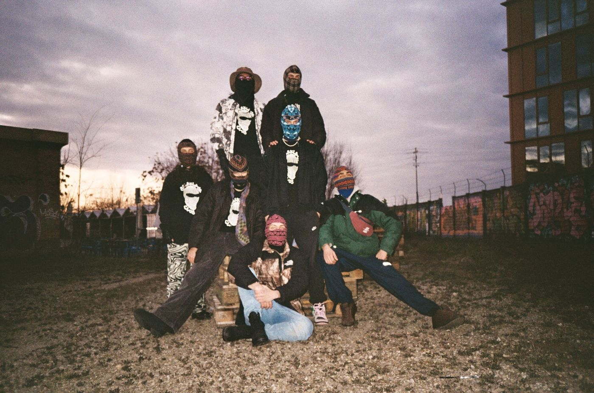

ALIK was born and raised in raves, starting in 2020. The following year he moved into clubs — Bologna, Florence, Parma, Modena — bringing the same underground spirit to the booth.
That same 2021, he founded Balaklava Club, a collective that goes beyond music: it brings art and live performance into the club too.
Shots
Listen
Follow